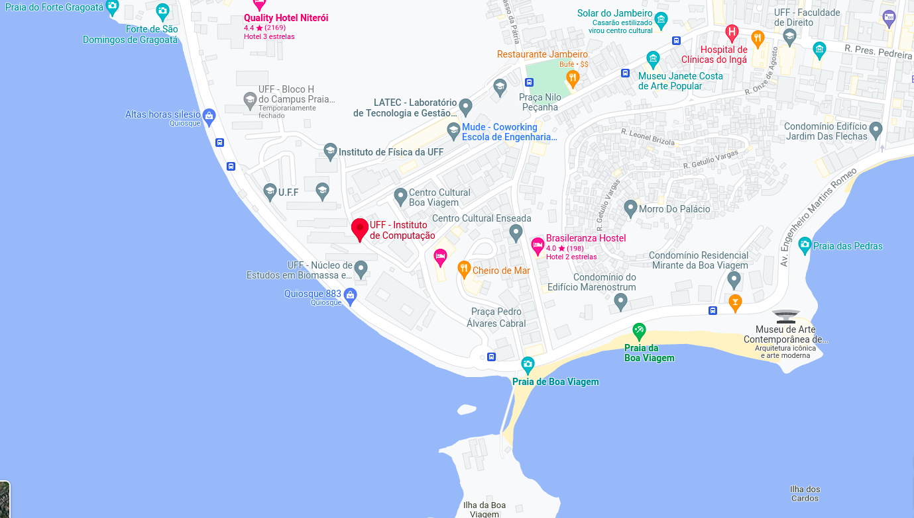

<!--<div class="alert alert-warning text-center">TBA</div>-->


<div class="container">
    <div class="row mt-xs-0 mt-sm-0 mt-md-1 mt-lg-2 mt-xl-3 mb-xs-2 mb-sm-2">
        <div class="col text-muted">


            <p>O III WBCI ocorre como Evento Satélite do CSBC 2022, 
                entre 31 de Julho e 5 de Agosto de 2022, na cidade de Niterói/RJ</p>

            <p>Breve histórico do evento</p>
            <p>O Workshop Brasileiro de Cidades Inteligentes (WBCI) teve sua primeira edição
            em 2018, reunindo, de forma bem-sucedida, trabalhos com foco na discussão
            em  tecnologias   para  a   computação   e  para  nossas  cidades.   O   evento   foi
            organizado por Frederico Lopes (UFRN), Fabio Kon (USP), Flávia Delicato (UFF),
            Paulo Pires (UFF), no CSBC2018 http://natal.uern.br/eventos/csbc2018/. Vide
            cópia   do   encarte:  https://repositorio.usp.br/directbitstream/319a7fe6-2f66-
            4a45-baa5-ba67f14e61ab/2910623.pdf. </p>
            <p>Em   2019,   uma   segunda   edição   do   evento   foi   feita   no   CSBC2019
            http://csbc2019.sbc.org.br/eventos/2wbci/, sendo organizado pelos mesmos
            quatro membros, além da prof. Rossana Andrade (UFC). Nesta edição, os anais
            incluem 10 artigos completos, selecionados através de um processo de revisão
            por   pares   do   tipo   double   blind,   de   um   total   de   24   artigos   completos
            submetidos no WBCI, o que implicou numa taxa de aceitação de 52%.</p>
            
            <p>Em   paralelo,   o   grupo   de   pesquisa   do  Creating.City,   formado   pelos
            pesquisadores Igor Machado Coelho, Vitor Nazário Coelho, Thays Oliveira e
            Luiz   Satoru   Ochi,   organizou   diversos   eventos   temáticos   em   Cidades
            Inteligentes. Em 2017, com parceria com o CBIC2017, foi organizado o 1st
            Workshop   on   Computational   Intelligence   and   Smart   Cities
            (https://creating.city/proceedings/wcisc2017/), bem como a trilha 1st Special
            Session   Operations   Research   and   Smart   Cities
            (https://creating.city/proceedings/sbpo2017), no XLIX SBPO 2017. Ainda em
            2017, uma trilha 1st Special Session on CI for SC at the IEEE Symposium Series
            on Computational Intelligence (https://creating.city/proceedings/ssci2017) foi
            feita em parceria com o IEEE Symposium on Computational Intelligence for
            Engineering   Solutions   at   the   IEEE   Symposium   Series   on   Computational
            Intelligence, Honolulu/Hawai. Em 2018, com parceria no IEEE WCCI / IJCNN
            2018 foi organizado o 2nd Workshop on Computational Intelligence and Smart
            Cities (https://creating.city/proceedings/wcisc2018/).</p>
            
            <p>Em 2019, foi organizada
            uma terceira edição do workshop nomeada Workshop on High Performance
            Computing   for   Smart   Cities   (https://creating.city/proceedings/whpcsc2019),
            com foco em computação de alto desempenho em parceria com o SBAC 2019.
            Acreditamos   portanto   que,   ao   unir   esforços,   teremos   um   terceiro   WBCI
            bastante atrativo para as diversas comunidades brasileiras de pesquisa com
            interesses e aplicações em cidades inteligentes.</p>
            
            <hr/>

            <div class="text-info">Localização:</div>

            <p>Instituto de Computação da Universidade Federal Fluminense <br>
            </p>

            <!--
            <div class="text-info">Accomodations:</div>

            <p>The following are the nearby hotels to the conference location. The workshop does not reserve a block in any
                hotel. Please reserve your hotel rooms soon since they are generally sold fast.<br>
            </p>

            <ul>
                <li> River Inn (924 25th St NW Washington, DC 20037)
                    <li>
                        <li>George Washington University Inn (824 New Hampshire Ave NW Washington, DC 20037)
                            <li>
                                <li>Residence Inn (801 New Hampshire Ave NW Washington,DC 20037)</li>
                                <li> Lombardy (2019 Pennsylvania Ave NW Washington, DC 20006)</li>
            </ul>


            <div class="text-info">Directions:</div>

            <p>The Science and Engineering Hall is in the walking distance from Foggy Bottom-GWU metro station. (Blue, Orange
                and Silver Lines)</p>
            -->

            


        </div>
    </div>
</div>